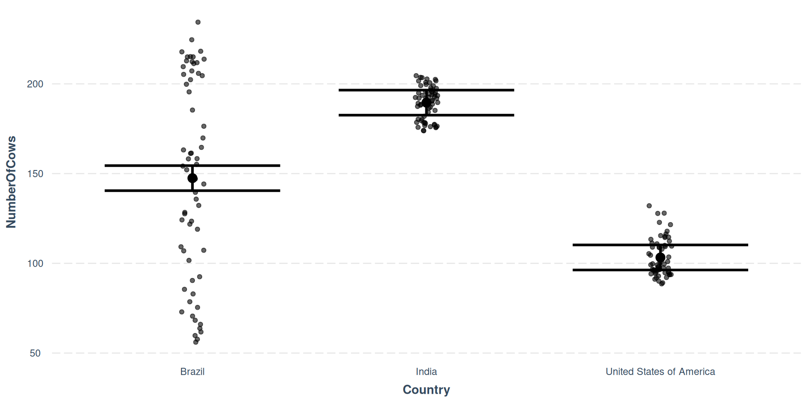
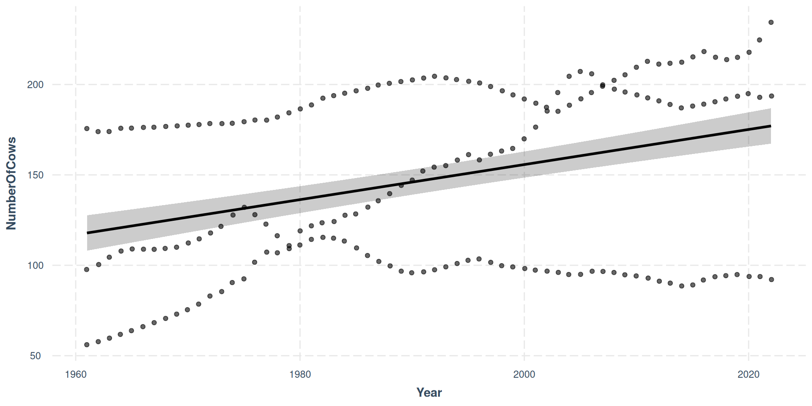

Lecture 5 - part A
2025-02-24
#Introduction
Use simple linear regression to model the relationship between a quantitative outcome (\(Y\)) and a single quantitative predictor (\(X\)): \[\Large{Y = \beta_0 + \beta_1 X + \epsilon}\]
\[\widehat{\text{Total number of cows}} = -16.1 + 0.008785434 \times \text{Year}\]
Year, we expect the total number of cows to be higher by 0.008785434 points, on average.Year is 0, we expect the total number of cows to be -16.1.Year, Area and Value Year Country NumberOfCows
1 1961 Brazil 56.04131
2 1962 Brazil 57.73989
3 1963 Brazil 59.70304
4 1964 Brazil 61.73294
5 1965 Brazil 63.83186
6 1966 Brazil 66.00214
7 1967 Brazil 68.24622
8 1968 Brazil 70.56661
9 1969 Brazil 72.96586
10 1970 Brazil 75.44670
11 1971 Brazil 78.56226
12 1972 Brazil 83.00000
13 1973 Brazil 85.50000
14 1974 Brazil 90.43701
15 1975 Brazil 92.49536
16 1976 Brazil 101.67400
17 1977 Brazil 107.29656
18 1978 Brazil 106.94256
19 1979 Brazil 109.17749
20 1980 Brazil 118.97142
21 1981 Brazil 121.78501
22 1982 Brazil 123.48800
23 1983 Brazil 124.18600
24 1984 Brazil 127.65501
25 1985 Brazil 128.42267
26 1986 Brazil 132.22157
27 1987 Brazil 135.72029
28 1988 Brazil 139.59910
29 1989 Brazil 144.15410
30 1990 Brazil 147.10232
31 1991 Brazil 152.13550
32 1992 Brazil 154.22930
33 1993 Brazil 155.13407
34 1994 Brazil 158.24323
35 1995 Brazil 161.22794
36 1996 Brazil 158.28854
37 1997 Brazil 161.41616
38 1998 Brazil 163.15436
39 1999 Brazil 164.62104
40 2000 Brazil 169.87552
41 2001 Brazil 176.38873
42 2002 Brazil 185.34884
43 2003 Brazil 195.55158
44 2004 Brazil 204.51274
45 2005 Brazil 207.15670
46 2006 Brazil 205.88624
47 2007 Brazil 199.75201
48 2008 Brazil 202.30673
49 2009 Brazil 205.30795
50 2010 Brazil 209.54111
51 2011 Brazil 212.81531
52 2012 Brazil 211.27908
53 2013 Brazil 211.76429
54 2014 Brazil 212.36613
55 2015 Brazil 215.22051
56 2016 Brazil 218.19077
57 2017 Brazil 215.00358
58 2018 Brazil 213.80945
59 2019 Brazil 215.00896
60 2020 Brazil 217.83628
61 2021 Brazil 224.60199
62 2022 Brazil 234.35265
63 1961 India 175.60000
64 1962 India 173.90000
65 1963 India 173.97101
66 1964 India 175.80000
67 1965 India 175.90000
68 1966 India 176.21200
69 1967 India 176.38400
70 1968 India 176.73101
71 1969 India 177.08600
72 1970 India 177.44200
73 1971 India 177.81400
74 1972 India 178.38400
75 1973 India 178.33101
76 1974 India 178.58000
77 1975 India 179.45701
78 1976 India 180.35000
79 1977 India 180.28600
80 1978 India 181.99200
81 1979 India 184.30000
82 1980 India 186.50000
83 1981 India 188.70000
84 1982 India 192.45301
85 1983 India 193.79701
86 1984 India 195.15400
87 1985 India 196.52000
88 1986 India 197.89501
89 1987 India 199.69501
90 1988 India 200.65000
91 1989 India 201.60000
92 1990 India 202.50000
93 1991 India 203.50000
94 1992 India 204.58400
95 1993 India 203.63400
96 1994 India 202.68400
97 1995 India 201.73400
98 1996 India 200.78400
99 1997 India 198.88200
100 1998 India 196.53501
101 1999 India 194.21600
102 2000 India 191.92400
103 2001 India 189.66000
104 2002 India 187.42200
105 2003 India 185.18099
106 2004 India 188.57000
107 2005 India 192.02099
108 2006 India 195.53501
109 2007 India 199.07501
110 2008 India 197.44499
111 2009 India 195.81501
112 2010 India 194.18499
113 2011 India 192.55501
114 2012 India 190.90410
115 2013 India 189.00000
116 2014 India 187.00000
117 2015 India 188.07519
118 2016 India 189.15420
119 2017 India 190.48526
120 2018 India 191.95754
121 2019 India 193.46287
122 2020 India 194.90437
123 2021 India 192.87987
124 2022 India 193.60691
125 1961 United States of America 97.70000
126 1962 United States of America 100.36901
127 1963 United States of America 104.48800
128 1964 United States of America 107.90301
129 1965 United States of America 109.00000
130 1966 United States of America 108.86200
131 1967 United States of America 108.78301
132 1968 United States of America 109.37101
133 1969 United States of America 110.01501
134 1970 United States of America 112.36901
135 1971 United States of America 114.57800
136 1972 United States of America 117.86200
137 1973 United States of America 121.53901
138 1974 United States of America 127.78800
139 1975 United States of America 132.02800
140 1976 United States of America 127.98000
141 1977 United States of America 122.81000
142 1978 United States of America 116.37501
143 1979 United States of America 110.86400
144 1980 United States of America 111.24200
145 1981 United States of America 114.35101
146 1982 United States of America 115.44400
147 1983 United States of America 115.00101
148 1984 United States of America 113.36000
149 1985 United States of America 109.58200
150 1986 United States of America 105.37800
151 1987 United States of America 102.11800
152 1988 United States of America 99.62200
153 1989 United States of America 96.74000
154 1990 United States of America 95.81600
155 1991 United States of America 96.39300
156 1992 United States of America 97.55600
157 1993 United States of America 99.17590
158 1994 United States of America 100.97360
159 1995 United States of America 102.78520
160 1996 United States of America 103.54820
161 1997 United States of America 101.65570
162 1998 United States of America 99.74400
163 1999 United States of America 99.11500
164 2000 United States of America 98.19900
165 2001 United States of America 97.29750
166 2002 United States of America 96.72300
167 2003 United States of America 96.10000
168 2004 United States of America 94.88800
169 2005 United States of America 95.01800
170 2006 United States of America 96.70150
171 2007 United States of America 96.57300
172 2008 United States of America 96.03450
173 2009 United States of America 94.72100
174 2010 United States of America 94.08120
175 2011 United States of America 92.88740
176 2012 United States of America 91.16020
177 2013 United States of America 90.09520
178 2014 United States of America 88.52600
179 2015 United States of America 89.14300
180 2016 United States of America 91.88800
181 2017 United States of America 93.62460
182 2018 United States of America 94.29800
183 2019 United States of America 94.80470
184 2020 United States of America 93.79330
185 2021 United States of America 93.78950
186 2022 United States of America 92.07660Use multiple linear regression to model the relationship between a quantitative outcome (\(Y\)) and a multiple quantitative predictors and factors (\(X\)): \[\Large{Y = \beta_0 + \beta_1 X_1 + \beta_2 X_2 + \epsilon}\]
# A tibble: 4 × 5
term estimate std.error statistic p.value
<chr> <dbl> <dbl> <dbl> <dbl>
1 (Intercept) -1785. 227. -7.86 3.30e-13
2 Year 0.970 0.114 8.51 6.39e-15
3 CountryIndia 42.1 5.00 8.41 1.14e-14
4 CountryUnited States of America -44.2 5.00 -8.84 8.12e-16✅ The intercept is meaningful in context of the data if
🛑 Otherwise, in this case not meaningful & difficult to interpret!
Substract the initial value of year 1960 from each year value
How do you interpret the intercept of 116 now?
Did the slope for Year or Country change
# A tibble: 4 × 5
term estimate std.error statistic p.value
<chr> <dbl> <dbl> <dbl> <dbl>
1 (Intercept) 117. 5.04 23.2 3.12e-56
2 Year 0.970 0.114 8.51 6.39e-15
3 CountryIndia 42.1 5.00 8.41 1.14e-14
4 CountryUnited States of America -44.2 5.00 -8.84 8.12e-16The estimate for India and USA was +42M and -44M
How do you interpret the slope of 0.97, combined with this graph?
Use * to make an interaction term
Year * Country or
Year + Country + Year:Country
MODEL INFO:
Observations: 186
Dependent Variable: NumberOfCows
Type: OLS linear regression
MODEL FIT:
F(5,180) = 1642.26, p = 0.00
R² = 0.98
Adj. R² = 0.98
Standard errors:OLS
----------------------------------------------------------------
Est. S.E. t val. p
-------------------------------- -------- ------ -------- ------
(Intercept) 51.98 1.84 28.31 0.00
Year 3.03 0.05 59.82 0.00
CountryIndia 127.86 2.60 49.25 0.00
CountryUnited States of 64.76 2.60 24.94 0.00
America
Year:CountryIndia -2.72 0.07 -38.00 0.00
Year:CountryUnited States of -3.46 0.07 -48.26 0.00
America
----------------------------------------------------------------